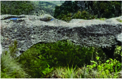
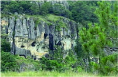
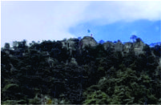

|
| |
| Principal Historia Curiocidades Ubicacion Contacto | El puente de piedra esta ubicado entre una peña,Plan de Guadalupe-San juan Mixtepec un lugar muy visitado por los habitantes de la comunidad ya que cuenta con una variedad de flora, fauna y con una maravillosa vista hacia los pueblos alrededores como un lugar ecoturístico, el puente es completamente de piedra aproximadamente una altura de 300 metros.  La peña de águila es un lugar que identifica mucha a la comunidad ya que el ella se encuentra una cueva donde creyentes hacen rituales 24 de abril “Dia de San Marcos” para pedir la lluvia, cuando la gente ve que cae gotas de agua en la cueva es por que el agua se acerca, y también porque al llegar al pueblo lo primero que se ve es la peña.  Xiini kaajua tuñu’ el 13/09/2022 fue colocada una Bandera con el fin de identificar el mes patrio, todo empezó con un vecino de la comunidad, en la actualidad la autoridad se encarga de colocarlo a lo que ya se convirtió en una costumbre.
 |